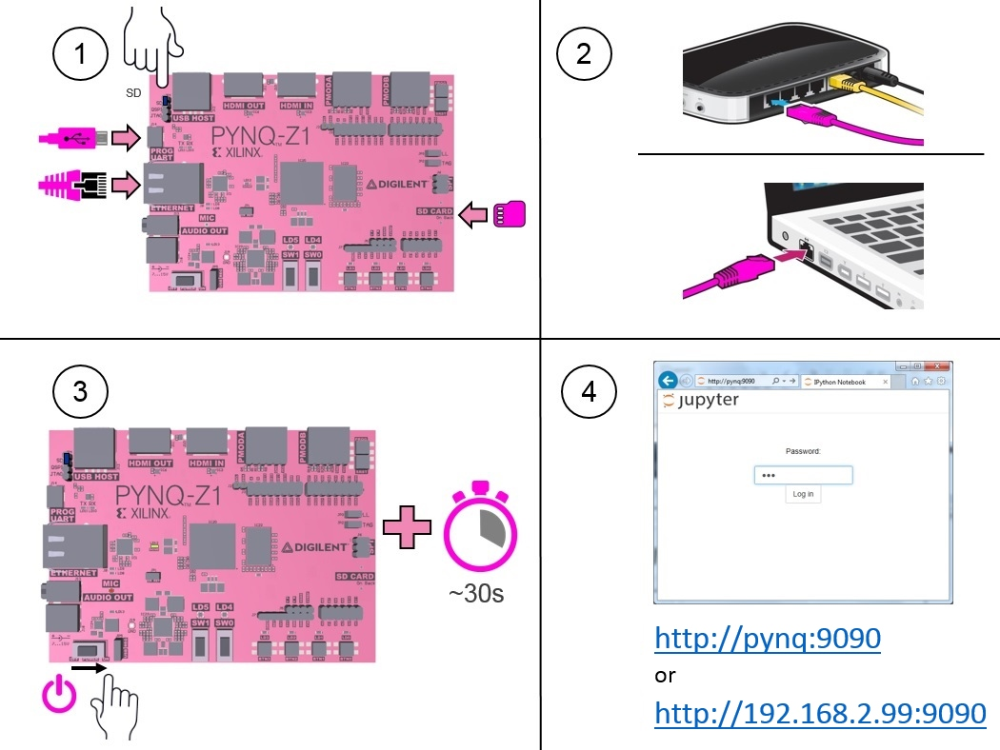

Quick Start¶
If you have a Micro SD card preloaded with the PYNQ-Z1 image, you can follow the quick start instructions below. Otherwise go to the next section for the full getting started with PYNQ guide in section 3.
Set up the board¶

1 Set the boot jumper to SD, insert the Micro SD card into the board, and connect the USB cable (Micro-B), and Ethernet cable
2 Connect the other end of Ethernet cable to your laptop or router, and the USB cable to your laptop or a powered USB port
3 Power on the board, and wait ~30s for the board to boot (The LEDs will flash, and the yellow LEDs will stay on when the board is ready)
4 Open a browser and go to http://pynq:9090 or http://192.168.2.99:9090 (It may take some time for the network to resolve the board address.)
The Jupyter password is xilinx
Jupyter Portal¶
In the Jupyter portal, click on the Welcome to Pynq notebook to get started.

You can find some getting started, and example notebooks in the home area.
Problems¶
If you have problems setting up, or connecting to your board, see the full getting started guide in section 3 or check the Frequently asked questions in section 16.
Support¶
For questions, or issue, please go to the PYNQ support forum